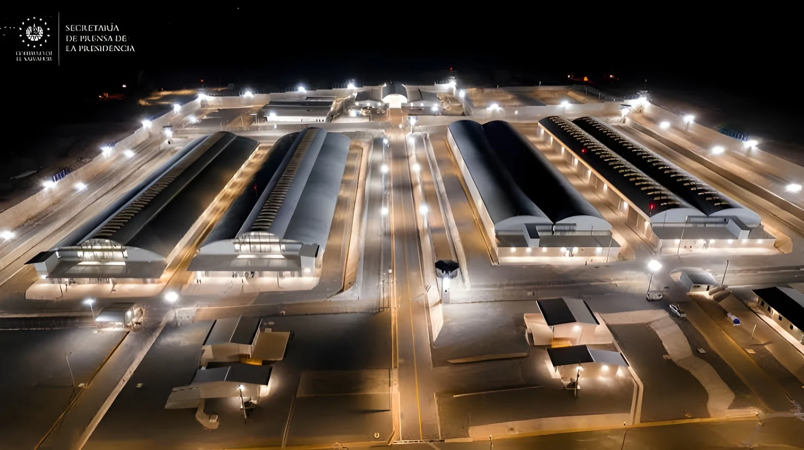

Fin septembre 2026, une source de l'Unité des services pénitentiaires et carcéraux (USPEC) a indiqué à l'AFP que la Colombie allait ouvrir « Renacer », une prison de haute sécurité de 1 974 places au nord du pays, présentée comme la première des dix méga-prisons voulues par le président Abelardo de la Espriella. Le chantier n'a toutefois rien de neuf : lancé sous Iván Duque, il cumule plus de quatre ans de retard, et sa capacité reste vingt fois inférieure à celle du CECOT salvadorien.
Le 29 septembre 2026, l'AFP a rapporté, d'après une source de l'USPEC, que la Colombie s'apprêtait à ouvrir « Renacer » (« Renaître »), une prison de haute sécurité bâtie à Sabanas de San Ángel, dans le département de Magdalena. Isolé, le site doit accueillir 1 974 détenus en isolement total. Selon l'agence, le chantier est avancé à 88 % (86 % selon les chiffres publiés par la presse colombienne), l'établissement sera inauguré dès que possible, et sa construction a déjà coûté 291 milliards de pesos, soit environ 87 millions de dollars.
Le président Abelardo de la Espriella, en fonction depuis le 7 août 2026, veut en faire la première de dix méga-prisons construites en zones reculées pendant son mandat de quatre ans, pour y enfermer les criminels les plus dangereux. Ces établissements doivent être privés de réseau mobile et d'internet, et gardés par une division spéciale de l'armée. La source de l'USPEC citée par l'AFP résume la consigne présidentielle : relancer immédiatement le chantier. Selon la même dépêche, la marine travaille aussi à un projet de détention de criminels dangereux sur des navires en mer, et une prison de haute sécurité de 1 300 places est en préparation à Medellín.
Le projet n'est pas né à la faveur de ce chantier. Candidat, Abelardo de la Espriella proposait déjà, lors d'une interview radiophonique du 19 novembre 2025, de bâtir six à huit méga-prisons isolées. Son argument : selon lui, 75 % des extorsions commises en Colombie partiraient des centres pénitentiaires. Dès son discours d'investiture du 7 août, il a annoncé la construction de méga-prisons, puis, fin août, un schéma de dix établissements confiés à des concessionnaires privés pour des contrats de cinquante à quatre-vingts ans.
« … donde no entre ni la señal de la Santa Cruz para que no pueda seguir extorsionando desde allá. »
— Abelardo de la Espriella, alors candidat, interview radio du 19 novembre 2025 : des prisons « où n'entre même pas le signal de la Sainte Croix, pour qu'il ne puisse plus continuer à extorquer de là-bas » (traduction ; jeu de mots entre « señal », signal, et le signe de croix)Contrairement à ce que l'effet d'annonce laisse penser, Renacer n'est pas une construction lancée par le nouveau pouvoir : le projet remonte au document de politique publique Conpes 3871 de 2016, le contrat de construction a été signé fin 2019 sous Iván Duque, et le chantier traîne depuis. Selon plusieurs médias, le projet initial prévoyait jusqu'à 3 500 places, ramenées à 1 974. Les entreprises et les autorités invoquent des modifications de plans, des retards de permis environnementaux, des problèmes d'ordre public, la dégradation de la route d'accès et des contraintes budgétaires.
Le document Conpes 3871 (gouvernement de Juan Manuel Santos) pose les bases du projet de nouvelle prison à Sabanas de San Ángel.
Signature du contrat de construction sous Iván Duque, pour 183,6 milliards de pesos ; le coût des travaux atteindra ensuite 275,4 milliards.
Début effectif du chantier, avec un an de décalage sur le calendrier initial.
Date de livraison initialement prévue, non tenue : le retard cumulé atteint aujourd'hui 49 mois.
Menaces d'ordre public, difficultés d'accès et contraintes budgétaires provoquent arrêts et ralentissements du chantier sous Gustavo Petro.
Investiture d'Abelardo de la Espriella : les méga-prisons figurent parmi ses annonces.
L'AFP révèle l'ouverture prochaine de Renacer. La gouverneure du Magdalena, Margarita Guerra, annonce que les ressources nécessaires ont été obtenues et qu'une date d'ouverture existe, à annoncer officiellement dans les jours suivants.
L'AFP souligne que Renacer reprend l'architecture de grands pavillons et de cellules individuelles du CECOT salvadorien, vitrine de la politique de Nayib Bukele. Mais la comparaison s'arrête largement là : le CECOT affiche 40 000 places, soit plus de vingt fois la capacité de Renacer. La Colombie s'inscrit par ailleurs dans un mouvement régional : l'AFP rappelle que ce modèle est aussi défendu par l'Équatorien Daniel Noboa et la Péruvienne Keiko Fujimori, et qu'il est dénoncé par les organisations de défense des droits humains pour ses atteintes à la dignité des détenus.
| Critère | Renacer (Colombie) | CECOT (Salvador) |
|---|---|---|
| Capacité | 1 974 places | 40 000 places |
| Statut | En construction (86-88 %) | En service |
| Contacts avec l'extérieur | Ni réseau mobile ni internet (objectif annoncé) | Visites familiales interdites |
Le chantier répond aussi à une urgence. Selon l'INPEC, en mars 2026, la Colombie comptait 102 949 détenus pour 81 025 places, soit une surpopulation de 27,1 %, contre 19,9 % en février 2022. Un rapport de transition de l'INPEC évoque en outre un déficit d'environ 12 000 gardiens (14 142 en poste). Dans l'un des centres de détention transitoire de Valledupar, 349 personnes occupaient un espace prévu pour environ 70. La Cour constitutionnelle, qui maintient depuis des années un « état de choses inconstitutionnel » dans les prisons, a de son côté pris des mesures pour lever les obstacles budgétaires de Renacer (auto 756 de 2026) et suit le chantier de près.
Renacer ne règle donc qu'une fraction du problème : ses 1 974 places représentent environ 9 % du surplus de détenus (calcul de la rédaction d'après les chiffres de l'INPEC de mars 2026). Et la prison vise d'abord les chefs de réseaux criminels, non la masse des détenus.
Le coût est le premier point de friction. Dès le 16 septembre, l'ancien ministre de la Justice de Gustavo Petro, Jorge Iván Cuervo, jugeait que dix méga-prisons sur le modèle panaméen de La Nueva Joya coûteraient environ 5 billions de pesos, et demandait si c'était une priorité en période d'ajustement budgétaire. Le ministre de la Justice, Iván Cancino, a pour sa part déclaré que construire des prisons exigeait des ressources et que la planification restait « bastante abierta », tout en promettant aussi des cultures de substitution et des « prisons productives ».
« Dix “méga-prisons” comme celles de La Nueva Joya au Panamá, qui semble être le modèle à suivre, coûteraient environ 5 billions. Est-ce la priorité en période d'ajustement budgétaire ? »
— Jorge Iván Cuervo, ancien ministre de la Justice, septembre 2026 (traduction ; 5 billions = 5 000 milliards de pesos)Les spécialistes consultés par Infobae en mars 2026 formulaient d'autres réserves : le criminologue Norberto Hernández Jiménez (Université Javeriana) rappelle que, selon la Constitution colombienne, la dignité et la resocialisation doivent primer ; Hugo Acero, ancien secrétaire à la Sécurité de Bogotá, estime qu'une prison devient ingérable au-delà de 2 000 à 2 500 détenus, ce qui place Renacer (1 974 places) juste sous ce seuil ; Angélica Beltrán, de la Corporación Humanas, juge que construire davantage de prisons ne résout pas la crise structurelle.
L'annonce relève autant de la communication politique que de la politique pénitentiaire : Renacer est un chantier hérité, long de dix ans, dont le gouvernement fait la vitrine d'une promesse de campagne. Le véritable test viendra de la capacité à financer et construire les neuf autres établissements, de la tolérance de la Cour constitutionnelle face à des conditions d'isolement extrêmes et de l'effet réel sur l'extorsion, que l'État dit vouloir couper à la source. Tout le débat du modèle Bukele est là : la sécurité promise vaut-elle les libertés et les garanties que la Constitution protège ?
A finales de septiembre de 2026, una fuente de la Unidad de Servicios Penitenciarios y Carcelarios (USPEC) indicó a la AFP que Colombia abrirá «Renacer», una cárcel de máxima seguridad con 1974 cupos en el norte del país, presentada como la primera de las diez megacárceles que quiere el presidente Abelardo de la Espriella. La obra, sin embargo, no es nueva: arrancó con Iván Duque, acumula más de cuatro años de retraso y su capacidad es veinte veces inferior a la del CECOT salvadoreño.
El 29 de septiembre de 2026, la AFP informó, a partir de una fuente de la USPEC, de que Colombia se dispone a abrir «Renacer», una cárcel de máxima seguridad construida en Sabanas de San Ángel, en el departamento de Magdalena. Aislado, el recinto debe alojar a 1974 reclusos en aislamiento total. Según la agencia, la obra está al 88 % (86 % según las cifras publicadas por la prensa colombiana), el penal se inaugurará lo antes posible y su construcción ya ha costado 291 000 millones de pesos, unos 87 millones de dólares.
El presidente Abelardo de la Espriella, en el cargo desde el 7 de agosto de 2026, quiere convertirla en la primera de diez megacárceles levantadas en zonas remotas durante su mandato de cuatro años para encerrar a los criminales más peligrosos. Estos centros no tendrán señal de celular ni internet y los custodiará una división especial del Ejército. La fuente de la USPEC citada por la AFP resume la instrucción presidencial: reactivar de inmediato la obra. Según el mismo despacho, la Armada trabaja además en un plan para recluir a criminales peligrosos en barcos en alta mar, y en Medellín se prepara una cárcel de máxima seguridad para 1300 personas.
El proyecto no nació con esta obra. Como candidato, Abelardo de la Espriella ya proponía, en una entrevista radial del 19 de noviembre de 2025, construir entre seis y ocho megacárceles aisladas. Su argumento: según él, el 75 % de las extorsiones cometidas en Colombia salen de los centros penitenciarios. Desde su discurso de posesión del 7 de agosto anunció la construcción de megacárceles y, a finales de agosto, un esquema de diez establecimientos confiados a concesionarios privados con contratos de cincuenta a ochenta años.
«… donde no entre ni la señal de la Santa Cruz para que no pueda seguir extorsionando desde allá.»
— Abelardo de la Espriella, entonces candidato, entrevista radial del 19 de noviembre de 2025 (juego de palabras entre «señal» y la señal de la cruz)Contra lo que sugiere el anuncio, Renacer no es una obra iniciada por el nuevo gobierno: el proyecto se remonta al documento de política pública Conpes 3871 de 2016, el contrato de construcción se firmó a finales de 2019 bajo Iván Duque y la obra se arrastra desde entonces. Según varios medios, el proyecto inicial preveía hasta 3500 cupos, reducidos a 1974. Las empresas y las autoridades citan modificaciones de diseño, retrasos en las licencias ambientales, problemas de orden público, el deterioro de la vía de acceso y limitaciones presupuestarias.
El documento Conpes 3871 (gobierno de Juan Manuel Santos) sienta las bases del proyecto de nueva cárcel en Sabanas de San Ángel.
Firma del contrato de construcción con Iván Duque, por 183 630 millones de pesos; el costo de las obras llegará después a 275 400 millones.
Inicio efectivo de las obras, con un año de desfase respecto al calendario inicial.
Fecha de entrega inicialmente prevista, incumplida: el retraso acumulado alcanza hoy los 49 meses.
Amenazas de orden público, dificultades de acceso y limitaciones presupuestarias provocan paradas y ralentizaciones de la obra con Gustavo Petro.
Posesión de Abelardo de la Espriella: las megacárceles figuran entre sus anuncios.
La AFP revela la próxima apertura de Renacer. La gobernadora del Magdalena, Margarita Guerra, afirma que se obtuvieron los recursos necesarios y que existe una fecha de apertura, que se anunciará oficialmente en los días siguientes.
La AFP subraya que Renacer retoma la arquitectura de grandes pabellones y celdas individuales del CECOT salvadoreño, escaparate de la política de Nayib Bukele. Pero la comparación termina ahí en buena medida: el CECOT tiene 40 000 plazas, más de veinte veces la capacidad de Renacer. Colombia se suma además a una tendencia regional: la AFP recuerda que este modelo también lo defienden el ecuatoriano Daniel Noboa y la peruana Keiko Fujimori, y que las organizaciones de derechos humanos lo critican por atentar contra la dignidad de los reclusos.
| Criterio | Renacer (Colombia) | CECOT (El Salvador) |
|---|---|---|
| Capacidad | 1974 cupos | 40 000 plazas |
| Estado | En construcción (86-88 %) | En funcionamiento |
| Contacto con el exterior | Sin celular ni internet (objetivo anunciado) | Visitas familiares prohibidas |
La obra responde también a una urgencia. Según el INPEC, en marzo de 2026 Colombia tenía 102 949 reclusos para 81 025 cupos, un hacinamiento del 27,1 %, frente al 19,9 % de febrero de 2022. Un informe de empalme del INPEC señala además un déficit de unos 12 000 guardianes (hay 14 142 en servicio). En uno de los centros de detención transitoria de Valledupar, 349 personas ocupaban un espacio previsto para unas 70. La Corte Constitucional, que mantiene desde hace años un «estado de cosas inconstitucional» en las cárceles, adoptó por su parte medidas para superar las barreras presupuestales de Renacer (auto 756 de 2026) y sigue de cerca la obra.
Renacer solo resuelve, pues, una fracción del problema: sus 1974 cupos equivalen a cerca del 9 % del excedente de reclusos (cálculo de la redacción a partir de las cifras del INPEC de marzo de 2026). Y la cárcel apunta ante todo a los cabecillas de redes criminales, no a la masa de reclusos.
El costo es el primer punto de fricción. Ya el 16 de septiembre, el exministro de Justicia de Gustavo Petro, Jorge Iván Cuervo, estimaba que diez megacárceles como las del modelo panameño de La Nueva Joya costarían alrededor de 5 billones de pesos y preguntaba si era una prioridad en tiempos de ajuste fiscal. El ministro de Justicia, Iván Cancino, declaró por su parte que construir cárceles requería recursos y que el tema de planeación seguía «bastante abierto», aunque prometió también sustitución de cultivos y «cárceles productivas».
«Diez “mega cárceles” como las de la Nueva Joya en Panamá, que parece ser el modelo a seguir, costarían alrededor de 5 billones. ¿Es la prioridad en tiempos de ajuste fiscal?»
— Jorge Iván Cuervo, exministro de Justicia, septiembre de 2026Los especialistas consultados por Infobae en marzo de 2026 planteaban otras reservas: el criminólogo Norberto Hernández Jiménez (Universidad Javeriana) recuerda que, según la Constitución colombiana, deben primar la dignidad y la resocialización; Hugo Acero, exsecretario de Seguridad de Bogotá, considera que una cárcel se vuelve ingobernable por encima de 2000 a 2500 reclusos, lo que sitúa a Renacer (1974 cupos) justo por debajo de ese umbral; y Angélica Beltrán, de la Corporación Humanas, opina que construir más cárceles no resuelve la crisis estructural.
El anuncio tiene tanto de comunicación política como de política penitenciaria: Renacer es una obra heredada, de diez años, que el gobierno convierte en escaparate de una promesa de campaña. La verdadera prueba llegará con la capacidad de financiar y construir los otros nueve establecimientos, con la tolerancia de la Corte Constitucional ante condiciones de aislamiento extremas y con el efecto real sobre la extorsión, que el Estado dice querer cortar de raíz. Ahí está todo el debate del modelo Bukele: ¿vale la seguridad prometida las libertades y garantías que protege la Constitución?